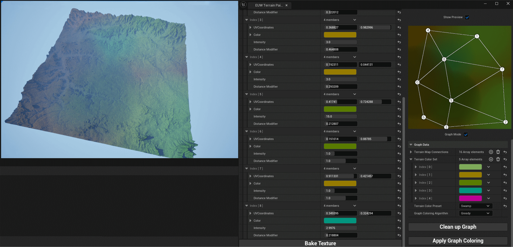

Terrain Color Painter
This project is an Unreal editor tool that allows for iterating the color of small pieces of terrain very quickly.

This tool was created as a research project; it was meant to determine whether graph coloring algorithms had potential for use in a terrain generation pipeline, especially as an alternative for projects where extensive Houdini pipelines to deal with terrain were simply too bulky.
During this project I had to become intimately familiar with how the Unreal editor actually functions behind the curtain. I also ended up writing some documentation on the systems I touched (for future personal reference), due to Unreal's documentation being lackluster.
Read the entire essay here.